頑張らないために頑張る
ゆるく頑張ります
Stable Diffusionを使ってGoogle Colaboratory上で画像を生成する
概要
Stable Diffusion（以下、SD）とは、Midjourneyのように「テキストから画像を生成する」AIです。Midjourneyと異なるのはやっぱりなんといっても、そのAIモデルがまるっと公開されていることでしょうか。そのため、現状のモデルをそのまま使うことも可能ですし、オリジナルのモデルを作ることも可能です。そして、そのモデルを組み込んだwebアプリなんかを作ることも可能なわけです。
「世界変革の前夜は思ったより静か」を読んだのですが、まぁすごい熱量です。一エンジニアとして、この熱量に当てられたら行動してみたくなるってもんです。そうでしょう！？（迫真）
そんなわけで、今回はこれをGoogle Colaboratory（以下、Colab）で動作させて、とくにimg2img（元画像と文章から画像を生成する）をやってみたいのですよ。というわけで行ってみましょう。やらいでか。
目的
今回の最終的なゴールは、「SDをColab上で動作させて、img2imgを利用して画像生成を実行してみる」です。テキストから画像生成するのも楽しいけど、入力の画像とテキストでどんな出力かましてくれるのよ？っていうところに興味があります。というわけで今回は、王道の「テキストから画像を生成する」ところをまるっとすっ飛ばしていきなりimg2imgもやってみます。っていうか、text2imgだったら、ほら、自分で環境を用意しなくてもできるし・・・ねぇ？（泳ぐ目
SDはめちゃくちゃ優秀なので、エンドユーザーが買えるような端末（たとえばM1が搭載されているようなMac）でも動作するよう調整されています。そのため、高価なGPUを搭載していないような「そこそこのスペック」の端末であれば、ローカルで環境構築して動かせます・・・が、手持ちの端末が最近ちょっとストレージの容量少ないんですよねぇ。というわけで、Colabを利用しようぜ！というわけです。もちろん、SDはちゃんとColab上で動作してくれます。
あ、ちなみにですがGoogle Colaboratoryとは、ブラウザで利用できるPythonの環境です。GPUも利用できます。スゲェ、さすがGoogle。
手順
ざっくりした手順はこんな感じ。
- Hugging Faceアカウント登録
- Hugging Faceのトークン発行
- Colabの初期設定
- Stable Diffusionの初期設定
- 入力画像の準備とpromptの作成
- 画像生成！お気に入りのものが生成されるまでひたすら生成！
手順自体がそもそも多くないうえに、コードもほぼコピペで動かせるので困ることはあまりないかもしれません。強いて言えば、後述する「prompt」が鬼門かな、というくらいです。例外は、SD側の仕様が変わるとかそういうシチュエーションですかね。そういう場合は、「そういうケースに陥ったら対応」っていうスタンスで行きます。
では行ってみましょう。
Hugging Faceアカウント登録
Stable Diffusionを利用するにはHugging Faceのアカウントを取得し、アクセストークンを発行する必要があります。
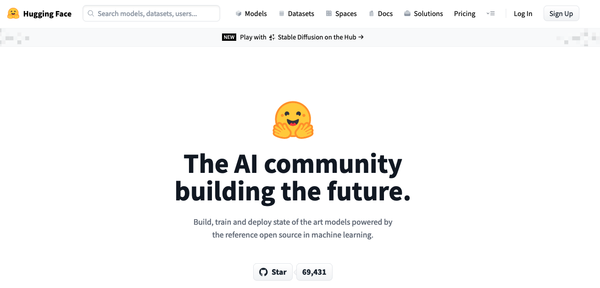
まず、Hugging Faceのwebページにアクセスして、右上の「Sign Up」をクリックします。
あるいはStable Diffusionのページにアクセスします。
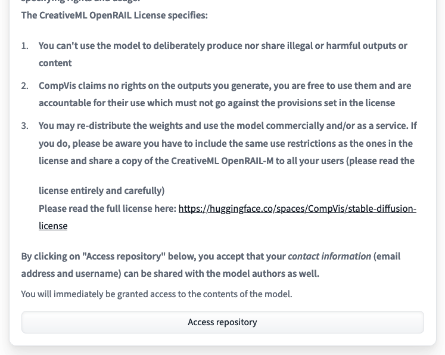
ページ下部の「Access repository」をクリックします。すると、Hugging Faceのログイン画面が表示されるので、そこで「Sign Up」をクリックしてください。

メールアドレスと設定したいパスワードをクリックします。
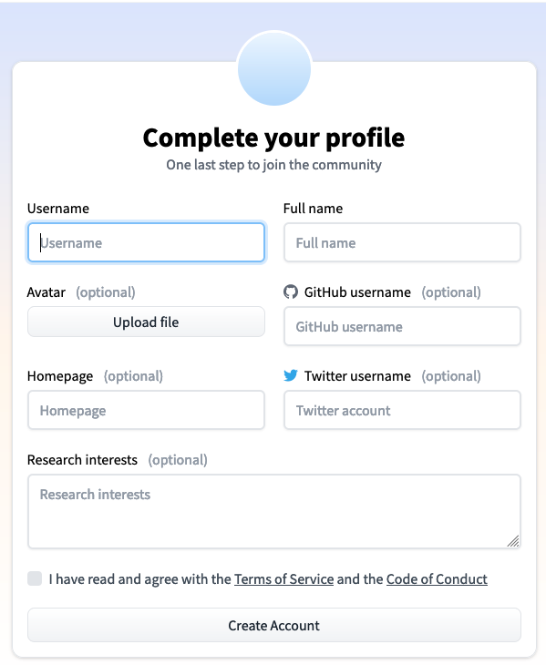
今度はユーザー名などを入力します。必要に応じて、GitHubやTwitterのアカウントなどを登録できます。最後に「I have read and agree with the Terms of Service and the Code of Conduct」の部分をチェックして「Create Account」をクリックします。ちなみに、ユーザー名は早いもの勝ちのようです。自分が最初取ろうとしたユーザー名は「すでにあるぜ！」と言われて取得できませんでした。
なお、この時点でさっき入力したメールアドレス宛に認証メールが来ているはずです。到着していたら記載されているURLをクリックして、メールアドレスを認証します。
これでアカウント登録が完了しました。
Hugging Faceのトークン発行
この時点でHugging Faceにログインできているはずなので、Settings＞Access Tokenにアクセスします。Settingsは、画面右上の円形アイコンをクリックすると表示されるメニューの中にいます。
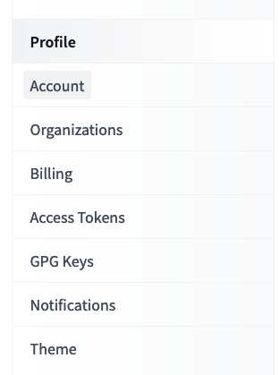
上記の「Access Token」をクリックします。
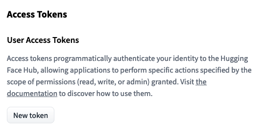
こんな画面が表示されるはずなので、「New Token」をクリックします。
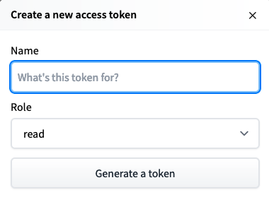
今度はこんな画面が表示されます。トークンの名前は任意ですが、何か適当なものを入力しておきます。roleはそのまま「read」で。入力できたら「Generate a token」をクリックします。すると、アクセストークンが発行されます。
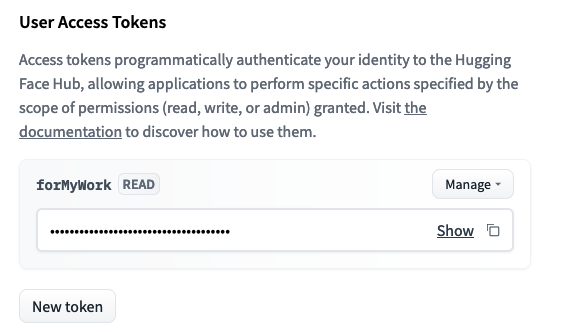
「Show」の右側にあるアイコンをクリックすると、クリックボードにアクセストークンをコピーできます。
これでアクセストークンの発行が完了しました。
Colabの初期設定
まずはGoogle Colaboratoryにアクセスします。
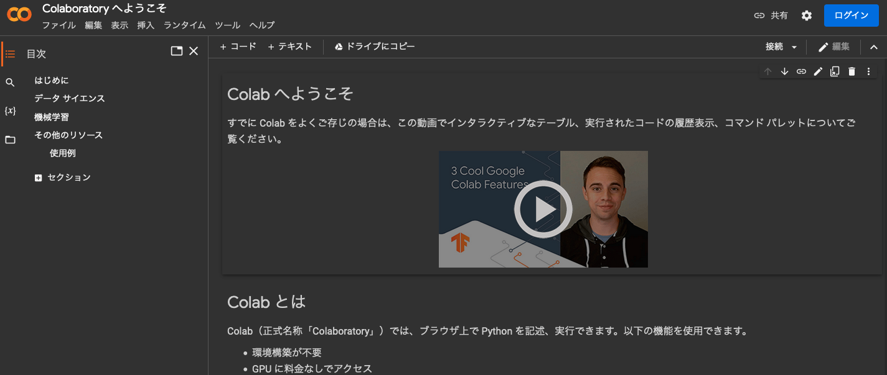
ここで右上の「ログイン」をクリックして、Googleアカウントでログインします。Googleアカウントがない場合は、事前に作成しておいてください。まぁ最近は、Googleのアカウントを持ってない人ってかなりレアだと思いますが・・・。
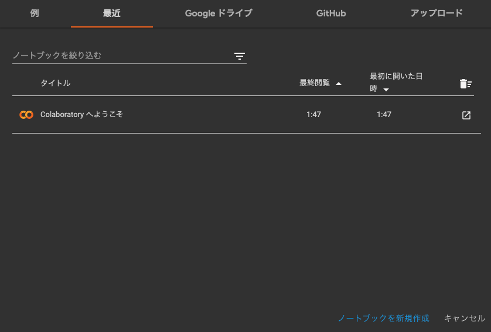
ログインできたらこんな画面が表示されるはずです。ここでは右下の「ノートブックを新規作成」をクリックします。
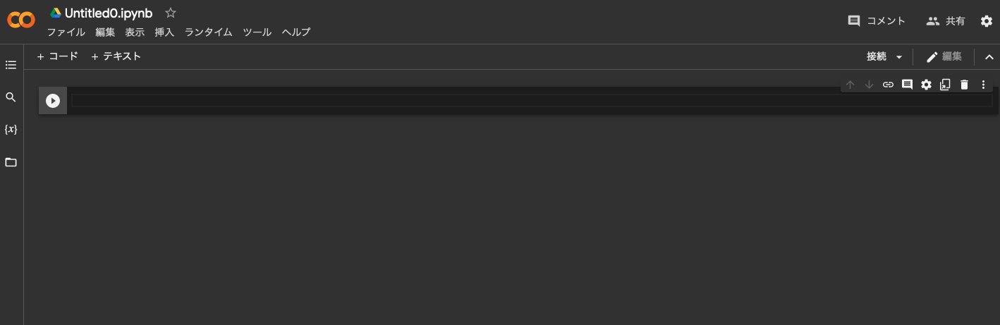
すると、新規のnotebookが作成されます。ここで1回設定の変更を行う必要があります。編集＞ノートブックの設定をクリックします。
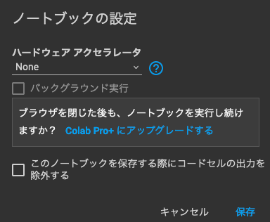
するとこんな画面が表示されます。この画面は現在編集しているnotebookで利用するハードウェアを指定できるのですが、デフォルトだとハードウェアアクセラレータは「None」の設定になっているはずです。
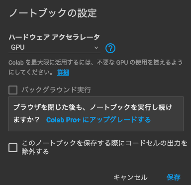
今編集しているnotebookは、SD実行のためにGPUを使います。そのため、上記のようにハードウェアアクセラレータの欄を「GPU」に設定します。設定したら「保存」を押します。これでGPUが使えるようになりました。
これでColabの初期設定は完了です。
Stable Diffusionの初期設定
この時点では「とりあえずPythonの環境が揃っただけ」なので、SDを実行できるような環境ではまったくありません。そこでまずはSDを利用できる環境を構築します。と言っても、そんなに難しいことはなく必要なパッケージなんかをインポートすればいいだけです。
!pip install transformers scipy ftfy
!pip install git+https://github.com/huggingface/diffusers.gitまずは新規のnotebookを作成して、上記のコードを入力し再生ボタンのようなアイコンをクリックします。すると、該当のセルが実行され、必要なパッケージがインストールされます。以降も、セルを実行する際は同様に再生ボタンを押せばセル単位に実行してくれます。
ここで普通にpip install diffusersと実行すると現状（2022年9月冒頭）では0.2.4がインストールされるのですが、このバージョンはimg2imgに対応していません。そこで、img2img対応したバージョンをインストールするために、GitHubのリポジトリを指定しています。
ちなみに、pipの先頭に!をつけて実行するのは、Jupyter Notebookにおいてパッケージをインストールするためです。
# Token setting
ACCESS_TOKEN="<さっき取得したHugging Faceのトークン>"次はトークン設定です。先ほど取得したHugging Faceのアクセストークンを上記の形で設定します。アクセストークンは、Hugging Faceのページからコピーしておいてください。
import torch
from diffusers import StableDiffusionImg2ImgPipeline
pipe = StableDiffusionImg2ImgPipeline.from_pretrained(
"CompVis/stable-diffusion-v1-4",
revision="fp16",
torch_dtype=torch.float16,
use_auth_token=ACCESS_TOKEN
).to("cuda")今度は実際にSDのパイプラインを準備します。これは上記をそのままコピペして実行すればOKです。
入力画像の準備とpromptの作成から画像生成
さて、ここで入力にしたい画像を用意します。サンプルとして、ここではこの子犬の画像を入力に利用することとします。イッヌかわいい。このファイルは適当な名前でColabにアップロードしておきましょう。
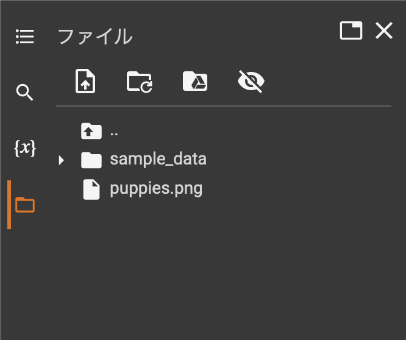
アップロードする方法は、Colabの左側にあるフォルダアイコンをクリックしてファイルの一覧を表示してから、アップロードしたいファイルをローカルのエクスプローラーやFinderからColabのファイル一覧へドラッグアンドドロップするだけです。ドラッグアンドドロップしてもファイルの一覧に追加されない場合は、「更新」ボタンを押してファイルの一覧表示を更新してみてください。
from PIL import Image
from torch import autocast
# 画像生成
prompt = "Concept art of puppies wearing red bow tie. Background is beautiful histroical theater."
init_image = Image.open("<アップロードしておいたファイルの名前>").convert("RGB")
init_image = init_image.resize((512, 512)) # 512x512にリサイズしないとエラーになります
with autocast("cuda"):
images = pipe(
prompt=prompt,
init_image=init_image,
strength=0.85
)["sample"]
images[0].save("output.png")上記のコードではアップロードしておいたファイル名を指定し、512x512のサイズにリサイズしています。このサイズにしておかないと画像の生成時にエラーを吐いてしまうため、ここでリサイズが必要です（widthに関してはもうちょっとだけ多くてもいいらしい？）。
さて、ここで画像生成に係る重要な部分を編集します。さっきの画像もimg2imgはもちろん大事ですが、それ以上に大事なのが変数promptに格納された文字列です。ここでは”Concept art of puppies wearing red bow tie. Background is beautiful histroical theater.“と入力している箇所に当たります。このprompt、生成したい画像の画風や背景などの内容などについて記述する必要があります。つまり、ここで「どんな画像を生成したいかをAIに依頼するわけです。
のですが、これが結構難易度高いというかなんというか・・・。平たく言えば「XXXみたいな感じで描いてー」とAIに依頼している感じです。なのですが、依頼内容が無視されることもまあまあ多いです。しっかり再現されることもあれば、「うーん、こんな依頼じゃなかったんだけどなー」と、首をひねりたくなるようなことがそこそこあります。まぁ、人間同士でも起きうることが、AIにお願いするときにも起きるとは、変なところでAIに対しても人間味を感じてしまうところです。
そして、ここの箇所のコードを実行することでoutput.png、つまり生成された画像が出力されます。おっしゃー、やるぞー。
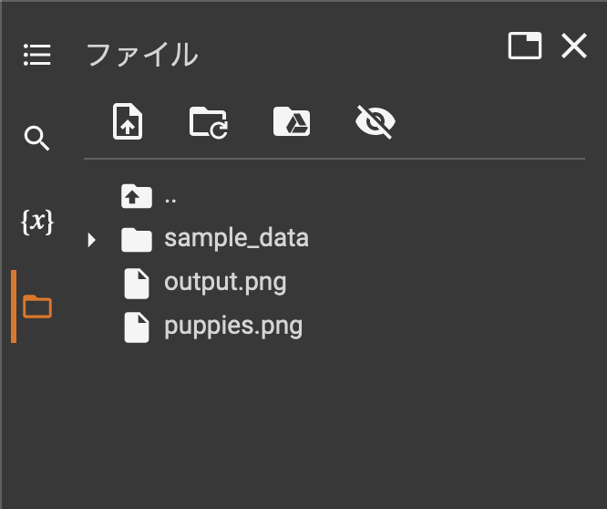
処理が終わったら、左側のファイル一覧のアイコンのうち「更新」というアイコンを押して表示を更新しましょう。すると、「output.png」というファイルが追加されているはずです。このファイルこそが生成された画像です。このファイルをダブルクリックすると、右側にプレビューされます。好みの画像が生成されましたでしょうか？
生成結果
そんなわけで、実際に上記のソースを使って生成してみました。
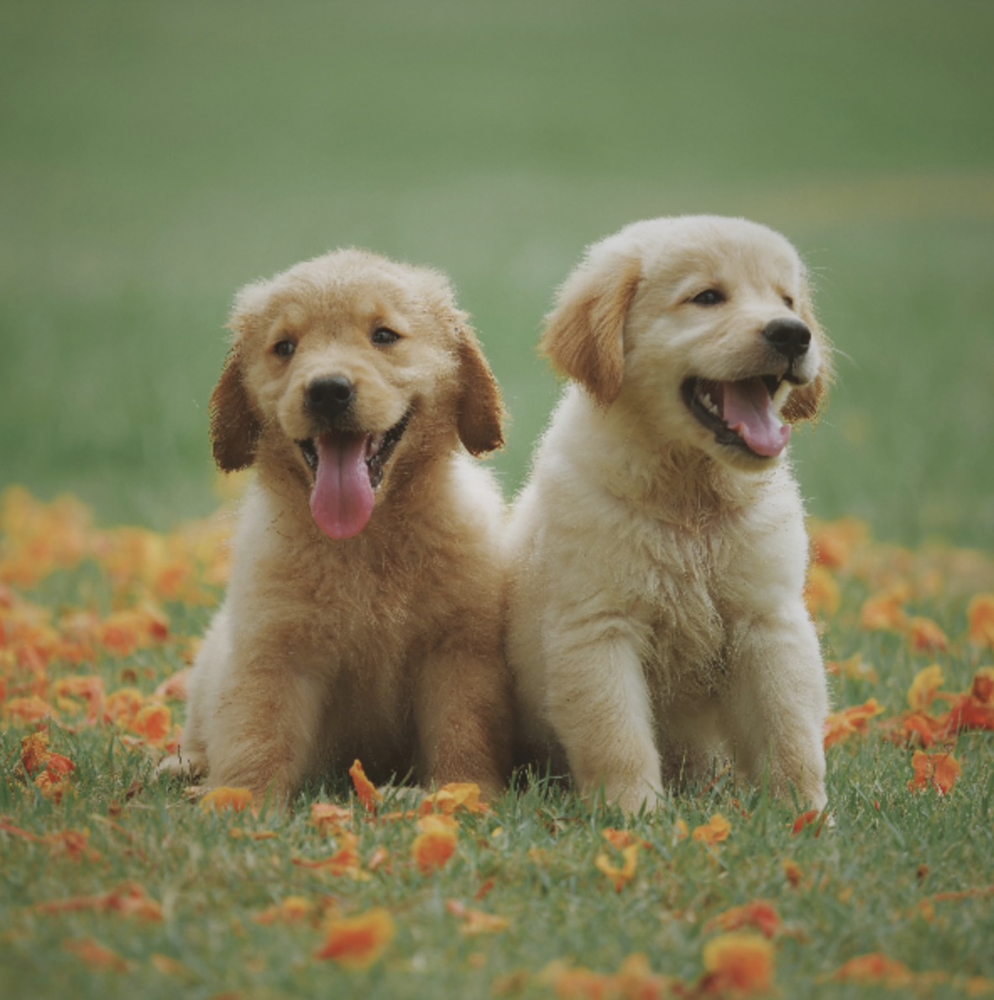
このイッヌたちを入力としました。
前述の通り、promptは「Concept art of puppies wearing red bow tie. Background is beautiful histroical theater.」です。どんな感じに生成されるでしょうか？見てみましょう。
うん、悪くない。悪くないが、左側でなんか胴体が延長されてるぞ。

おお、なんか妙なえんじ色の楕円が描画されているが、なかなかどうして「コンセプトアート」っぽい感じがしますね。背景も悪くない。まぁ、ちょっとボウタイが変なところにありますが・・・。
カトゥーン調。でもこれもpromptの内容からしていい感じですね。片耳が「ペロン」って折れてるのかわいい。
ドヤアァァァァァァ。好き。
渋い・・・なんか、色合いといいレイアウトといい、額に入れて飾りたい感じの「肖像画」っぽい出来ですな。
何回か生成していると気づくのですが、これ、入力の犬種にかかわらずいろいろな犬種を出力してくれます。多分、犬と猫はいろんな種類が学習データに入っているんでしょうね。入力はラブラドールレトリーバーですが、コーギーやパグっぽい出力もあったりして、そういう部分もバリエーション豊かです。生成ボタンを押せば、こんな感じにどんどん生成されていきます。楽しい_(┐「ε:)_
ただ、全体的に描画が甘くなりやすいのは悩ましいところかなー。「絵としての味」として見られることもあれば、「フツーになぐり書きだろこれ」みたいな絵も生成されることもあり・・・。少なくとも「撮って出し（生成出し？）」でなんの編集もせずに即利用可能か、と聞かれればちょっと難しいよねと言わざる得ないのですがどうでしょう。画風の指定をもう少し別なものにすれば改善するかもしれません。
あとpromptで指定していた「Background is beautiful histroical theater.」がほぼまるっと無視されているのが、いかんともしがたい。いや、まれにそれっぽい背景の画像が生成されることもあるのですが、そういうときに限って主役の子犬がイマイチな描画になってて、結果的に採用できない・・・みたいなケースがありました。なので、そのあたりは入力の画像や、promptのチューニングが必須だと思います。あとは試行回数かな。
まとめ
これ、めちゃくちゃおもしろいんだけど。
今回はStable Diffusionを使って画像生成を試してみました。「狙ったとおりか？」と聞かれるとちょっと首を傾げるところもなくはないですが、それでもこんなに簡単かつ手軽に楽しい体験ができるというのは、とっても貴重なことだと思います。
いや、ホントに楽しいわコレ_(┐「ε:)_